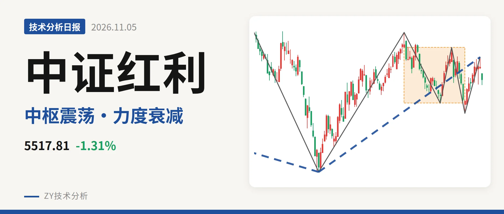
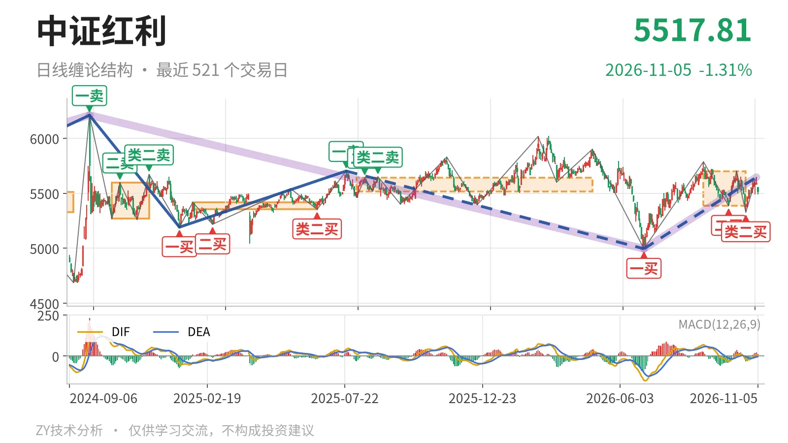
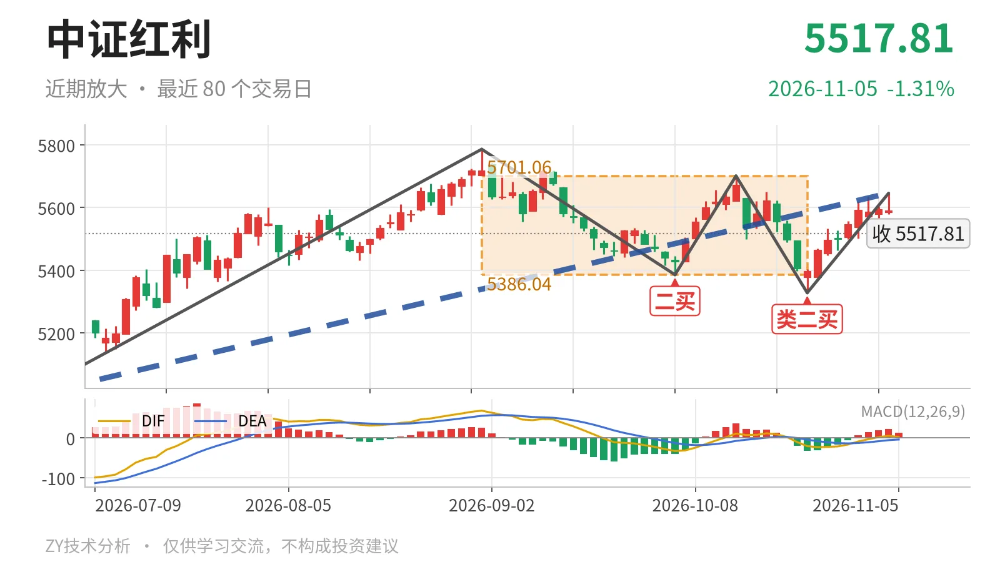

中证红利｜上冲未过前高，回踩盯5386

最近日线中枢 5386.04—5701.06点，收盘位于中枢之内
一句话：冲高未过前高，上涨笔力度衰减，短线回到最近中枢内
🧭 走势结构：上涨线段未结束，当前是中枢震荡
当前不是单边上涨，而是上涨线段内部的日线中枢震荡。更大级别仍处在2024年10月8日至2026年6月30日下跌段之后的修复里，6月30日至11月4日的日线上涨线段还没结束。该线段从4995.49点走到5646.01点，涨13.0%，内含5笔；最新价5517.81点又回到9月1日至10月23日中枢内。

📍 中枢与位置：价格在中枢内，中枢向下扩展
最新收盘处于最近日线中枢内部，中枢向下扩展而非上移。该中枢为9月1日至10月23日，区间5386.04—5701.06点，中轴5543.55点。最新价5517.81点距下沿约132点，距上沿约183点。与上一个2025年8月4日至2026年4月30日中枢（5518.46—5639.99点）相比，下沿从5518点下移到5386点，上沿从5640点上移到5701点。价格贴在中轴下方，结构不算强。
🧿 买卖点：最近三个日线买点仍在，但只是笔级别
最近三个日线买点都还在，但都只是日线笔级别。6月30日一买4995.49点、9月29日二买5386.04点、10月23日类二买5328.30点，三者都在一买上方，但类二买5328点没有高于二买5386点，回踩低点不抬升。6月30日一买尚未升格为线段级别一买，更大级别下跌段还没有结束。后续若跌破5328点，类二买就被破坏。

⚡ 背驰：上涨笔未新高，红柱面积大幅缩小
10月23日至11月4日上涨笔相对6月30日至9月1日上涨笔，未新高、力度弱。前者由5328.30点走到5646.01点，涨6.0%，红柱面积65，DIF高点5.7；后者由4995.49点走到5786.14点，涨15.8%，红柱面积1451，DIF高点68.7。价格没有过前高5786点，红柱面积却从1451缩到65，DIF高点从68.7降到5.7。这不是“新高不新强”，而是“未新高、力度弱”。末笔已结束，背驰以这两段已结束的上涨笔为对照，上涨线段内部离开段力度不足。
🧱 关键位置观察：看5701与5386的转换
结构给中性，弱在上涨笔没有新高、红柱面积收缩太快，反弹持续力不足。反弹若不能重新站上5701点，上涨段只算中枢震荡；重新站上5701点，上涨段才可能延续。回落若不破5386点，仍在中枢内；若跌破5386点，再往下就看5328点附近，那会破坏10月23日类二买，中枢下移。最新日线MACD的DIF在零轴之上、柱12.8，短期没有翻空，但不改变上涨笔背驰。
⚠️ 本文为基于公开行情数据的缠论技术结构记录，由程序自动计算并生成，仅供学习交流，不构成任何投资建议。市场有风险，投资需谨慎。